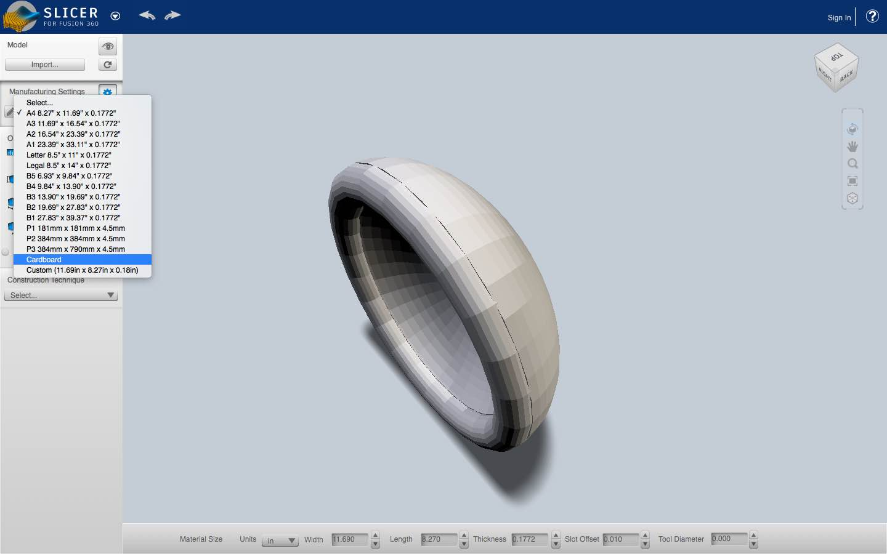
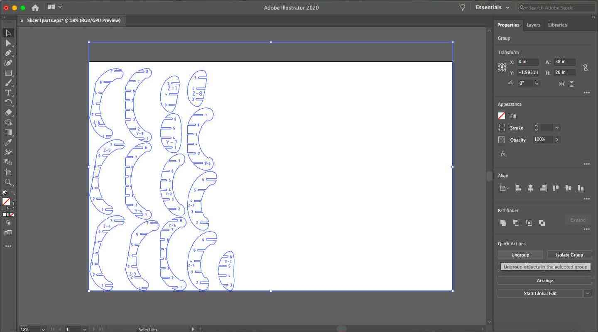
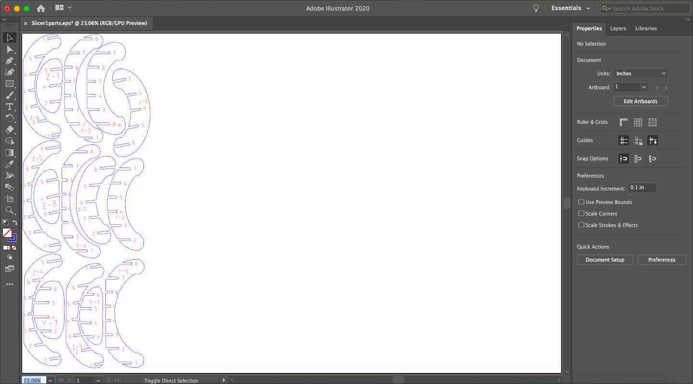
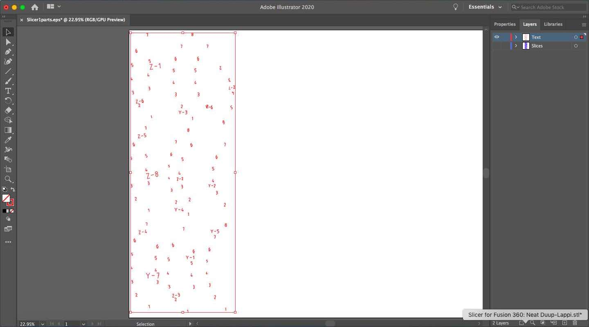
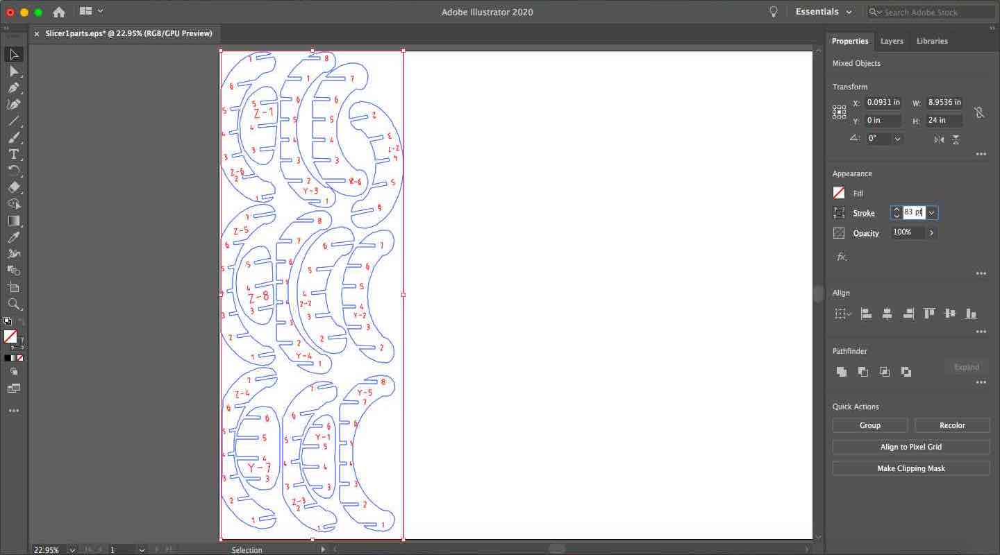
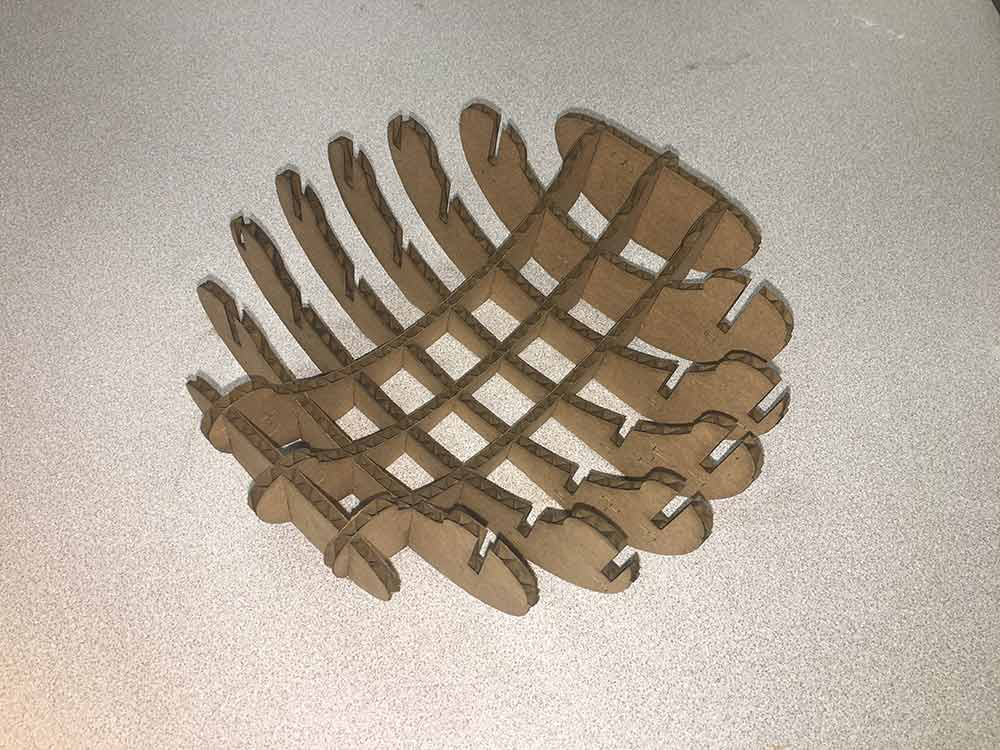
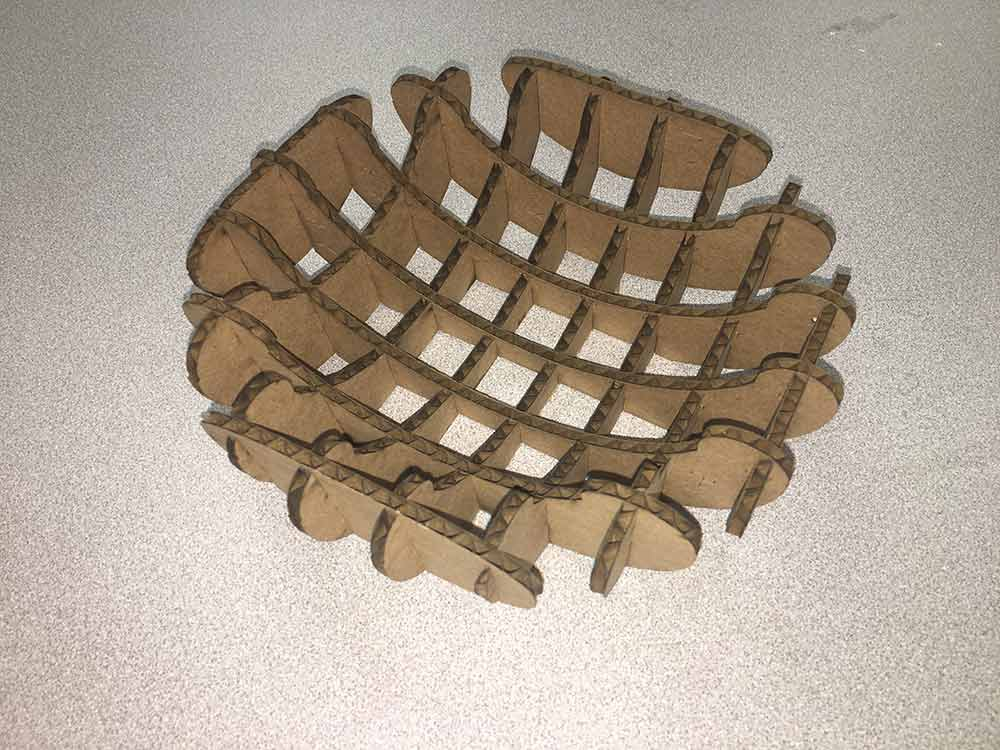

In this assignment I used Slicer for Fusion 360 to create a cardboard model of an object.
Contents
1) 3D Modeling
2) Using Slicer for Fusion 360
3) Preparing files in Illustrator
4) Assembling my Object
Design Files
3D Modeling
I chose to make a small bowl for this week's project. In Tinkercad, I started with a semi-sphere and added a flat side to make the base. After rotating the bowl to be right side up, I decided that I wanted it to have a curved lip. To do this, I sized a ring to be same outer diameter as the semi-sphere, then aligned it to go at the lip of the bowl.

Next, I needed to hollow out the bowl, so I used a smaller, semi-sphere shape as a hole tool. I grouped these items together and exported it as an STL file.

Using Slicer for Fusion 360
I imported the 3D model into Slicer for Fusion 360. This program easily generates two dimensional cutting files out of 3D models. These 2D parts, or "slices", can then be assembeled by hand to make a mock up of the 3D object.
In this window, I checked the "Object Size" to see that the bowl had an 8 inch diameter.
I added new Manufacturing Settings for the cardboard material that I planned on using. Its dimensions were 26" x 38" x .16". Then, I selected this new material in the Manufacturing Settings dropdown menu.


Under Construction Technique, I chose "Interlocked Slices" which presented me with a grid-like version of my model. Also, I decided to add a slight slant to the slices on one of the axes for visual effect.

This is what the plans for my model looked like after using Slicer for Fusion.
Preparing files in Illustrator
After downloading the vector file, generated by Slicer for Fusion 360, I used Illustrator to prepare the file for laser cutting. I changed the canvas dimensions to be the same size as a sheet of cardboard. Then, I ungrouped everything, and regrouped each slice with its own text. That way I could move the slices separately, but with their respective numbers and texts attached.

Next, I began nesting the slices, so that they took up as little space, all together, as possible.

I added a line, to cut the scrap parts off from the usable cardboard.
After that, I separated the text from the slice outlines and put them on different layers. This way, I could use different laser settings for the text.


Assembling my Object
In the Lab, I found some scrap cardboard that was pretty much the exact size of my job. I had to rotate my Illustrator design to be horizontal, since the cardboard didn't fit vertically.
I first laser cut the text at a low vector setting; about 50% speed, 20% power, and 80% frequency. Then, I cut the slice outlines with higher vector settings.
I laid out all of the slices, and sorted them by if they had notches on their left or right side. This helped me to visualize which parts were similar and how they should be put together. The longest slices made up the widest part of the bowl, so I assembled those first.
I pieced together the rest, knowing that the slices became smaller as they got closer to the edges.

 
Here is my finished product!